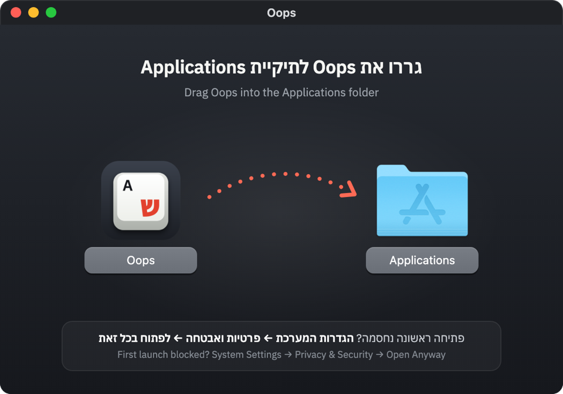

ל־Mac ול־Windows · חינם · קוד פתוחFor Mac & Windows · Free · Open source
הקלדתם בשפה הלא נכונה?
לוחצים וזה מתוקן.
Typed in the wrong language?
Press and it's fixed.
Oops מקליד מחדש טקסט שנכתב באנגלית במקום בעברית, וגם הפוך. עובד בכל אפליקציה, בלי למחוק ובלי להקליד שוב. Oops retypes text you typed in English instead of Hebrew, and the other way around. Works in every app. No deleting, no retyping.
Oops עובד על מחשבים (Mac ו־Windows). שלחו לעצמכם את הקישור ותתקינו מהמחשב.Oops runs on computers (Mac and Windows). Send yourself the link and install it there.
הקישור הועתק ✓Link copied ✓נסו כאן, בלי להתקיןTry it here, no install
הקלידו באנגלית כאילו המקלדת על עברית (למשל akuo nv akunl?) ולחצו או על הכפתור.Type in English as if your keyboard were set to Hebrew (for example akuo nv akunl?), then press or the button.
איך זה עובדHow it works
-
akuo nv akunl?
מקלידיםType
שכחתם להחליף שפה. קורה לכולם.You forgot to switch languages. Happens to everyone.
-
לוחצים על הקיצורPress the shortcut
בכל אפליקציה: וואטסאפ, ג׳ימייל, וורד, סלאק, כל אתר.In any app: WhatsApp, Gmail, Word, Slack, any website.
-
שלום מה שלומך?
ממשיכים לכתובKeep typing
הטקסט מתוקן, והמקלדת כבר עברה לשפה הנכונה.The text is fixed, and the keyboard has already switched language.
הפרטים הקטניםThe small details
התחרטתם? עוד לחיצה מבטלתChanged your mind? Press again
לחיצה נוספת מיד אחרי התיקון מחזירה את הטקסט בדיוק כמו שהיה.Pressing again right after a fix puts the original text back, exactly as it was.
עובד בשני הכיווניםWorks both ways
גם ןמנםס הופך ל־inbox.ןמנםס becomes inbox too.
מתקן רק את מה שצריךFixes only what's wrong
רק החלק שהוקלד בשפה הלא נכונה משתנה. רוצים לתקן משהו מסוים? מסמנים בדיוק אותו ולוחצים.Only the part typed in the wrong language changes. Want something specific fixed? Select exactly that and press.
פרטי, באמתPrivate, really
בלי AI ובלי שרת. Oops זוכר רק את מה שהקלדתם הרגע, בזיכרון בלבד, ושוכח בכל Enter או לחיצת עכבר.No AI, no server. Oops only remembers what you just typed, in memory, and forgets it on every Enter or click.
הקיצור שלכםYour shortcut
לא מסתדרים עם ? בוחרים כל צירוף אחר בהגדרות.Not a fan of ? Pick any other combination in settings.
קטן ושקטSmall and quiet
כמה מגה בודדים. יושב בשורת התפריטים או ליד השעון ולא מפריע.A few megabytes. Sits in the menu bar or next to the clock and stays out of your way.
הורדה והתקנהDownload & install
macOS 11 ומעלה · Apple Silicon ו־IntelmacOS 11 or later · Apple Silicon & Intel
-
פותחים את הקובץ שירד וגוררים את Oops לתיקיית Applications.Open the downloaded file and drag Oops into Applications.

- פותחים את Oops. בפעם הראשונה macOS יגיד שהוא לא יכול לאמת אותו. זה צפוי: Oops חינמי ולא משלם לאפל על חתימה. לוחצים סיום. Open Oops. The first time, macOS says it can't verify it. That's expected: Oops is free and doesn't pay Apple for a signature. Click Done.
- נכנסים להגדרות המערכת ← פרטיות ואבטחה, גוללים למטה ולוחצים לפתוח בכל זאת (Open Anyway), ומאשרים עם הסיסמה.Go to System Settings → Privacy & Security, scroll down, click Open Anyway and confirm with your password.
- Oops נפתח ומדריך אתכם לתת הרשאת נגישות. דקה, וזהו.Oops opens and walks you through the Accessibility permission. One minute and you're done.
מעדיפים פקודה אחת? בלי אזהרותPrefer one command? No warnings
פתחו את Terminal (⌘ רווח ואז Terminal), הדביקו ולחצו Enter:Open Terminal (⌘ Space, then Terminal), paste this and press Enter:
curl -fsSL https://nadavm-ux.github.io/oops/install.sh | bashהפקודה מורידה את הגרסה האחרונה מ־GitHub, מתקינה אותה ב־Applications ופותחת. אפשר לקרוא אותה קודם.It downloads the latest version from GitHub, installs it in Applications and opens it. You can read it first.
Windows 10 ו־11 · בלי הרשאות מנהלWindows 10 & 11 · No admin rights needed
- מריצים את הקובץ שירד. אם הדפדפן שואל, בוחרים שמירה (Keep).Run the downloaded file. If your browser asks, choose Keep.
- אם מופיע Windows protected your PC, לוחצים More info ואז Run anyway. זה קורה כי Oops חדש ולא חתום, וזה תקין. If you see Windows protected your PC, click More info, then Run anyway. That happens because Oops is new and unsigned.
- ההתקנה לוקחת שניות. Oops נפתח ומראה איך משתמשים.Setup takes seconds. Oops opens and shows you how to use it.
מעדיפים פקודה אחת? בלי אזהרותPrefer one command? No warnings
פתחו PowerShell (מקש Windows ואז PowerShell), הדביקו ולחצו Enter:Open PowerShell (Windows key, then PowerShell), paste this and press Enter:
irm https://nadavm-ux.github.io/oops/install.ps1 | iexהפקודה מורידה את הגרסה האחרונה מ־GitHub ומתקינה אותה. אפשר לקרוא אותה קודם.It downloads the latest version from GitHub and installs it. You can read it first.
שאלותQuestions
זה בטוח? זה לא כמו Keylogger?Is it safe? Isn't this like a keylogger?
כדי לדעת מה לתקן, Oops חייב לראות מה מקלידים, כמו כל כלי מהסוג הזה. אבל הוא זוכר רק את 300 התווים האחרונים, רק בזיכרון, ושוכח אותם בכל Enter, לחיצת עכבר או מעבר בין חלונות. אין לו שרת ואין לו לאן לשלוח. הבקשה היחידה שהוא שולח לאינטרנט היא בדיקה אם יצאה גרסה חדשה, ואפשר לכבות אותה. כל הקוד פתוח ב־GitHub.To know what to fix, Oops has to see what you type, like any tool of this kind. But it only remembers the last 300 characters, only in memory, and forgets them on every Enter, click or window switch. There's no server and nowhere to send anything. The only request it makes is checking for a new version, and you can turn that off. All the code is on GitHub.
למה macOS מבקש הרשאת נגישות?Why does macOS ask for Accessibility access?
זו ההרשאה שמאפשרת לאפליקציה לראות הקלדות ולהקליד בשמכם. בלעדיה אי אפשר לתקן טקסט באפליקציות אחרות. אפשר לבטל אותה מתי שרוצים בהגדרות המערכת ← פרטיות ואבטחה ← נגישות.It's the permission that lets an app see keystrokes and type for you. Without it, fixing text in other apps isn't possible. You can revoke it any time in System Settings → Privacy & Security → Accessibility.
למה יש אזהרה בהתקנה?Why is there a warning when installing?
אפל ומיקרוסופט גובות תשלום שנתי על חתימה דיגיטלית. Oops חינמי, אז המערכת לא מכירה אותו ומבקשת אישור. הקוד פתוח לכל מי שרוצה לבדוק, וההורדה מגיעה ישר מ־GitHub.Apple and Microsoft charge a yearly fee for code signing. Oops is free, so the system doesn't recognize it and asks you to confirm. The code is open for anyone to check, and downloads come straight from GitHub.
רק חלק מהמשפט יצא בשפה הלא נכונה. מה עושים?Only part of the sentence came out wrong. Now what?
Oops מתקן רק את הסוף שהוקלד בשפה הלא נכונה. אם צריך לתקן משהו אחר, מסמנים בדיוק אותו ולוחצים .Oops only fixes the end that was typed in the wrong language. To fix something else, select exactly that and press .
איך משנים את הקיצור?How do I change the shortcut?
לוחצים על האייקון של Oops (בשורת התפריטים ב־Mac, ליד השעון ב־Windows) ← הגדרות ← שינוי, ומקישים את הצירוף החדש.Click the Oops icon (menu bar on Mac, next to the clock on Windows) → Settings → Change, then press the new combination.
איפה זה עובד?Where does it work?
כמעט בכל מקום שמקלידים בו: דפדפנים, וואטסאפ, Word, Outlook, Slack, Notion, VS Code. לא עובד בשדות סיסמה (בכוונה), ולא בחלונות שרצים כמנהל ב־Windows.Almost anywhere you type: browsers, WhatsApp, Word, Outlook, Slack, Notion, VS Code. Not in password fields (on purpose), and not in apps running as administrator on Windows.
איזו מקלדת עברית נתמכת?Which Hebrew keyboard layout is supported?
הפריסה הישראלית הסטנדרטית (SI-1452), זו שמגיעה עם Windows ועם Mac.The standard Israeli layout (SI-1452) that ships with Windows and Mac.
איך מסירים?How do I uninstall it?
ב־Mac: יוצאים מ־Oops (אייקון ← יציאה) ומוחקים אותו מ־Applications. ב־Windows: הגדרות ← אפליקציות ← Oops ← הסרה.Mac: quit Oops (icon → Quit) and delete it from Applications. Windows: Settings → Apps → Oops → Uninstall.
כמה זה עולה?How much does it cost?
כלום. חינם וקוד פתוח (רישיון MIT).Nothing. It's free and open source (MIT license).